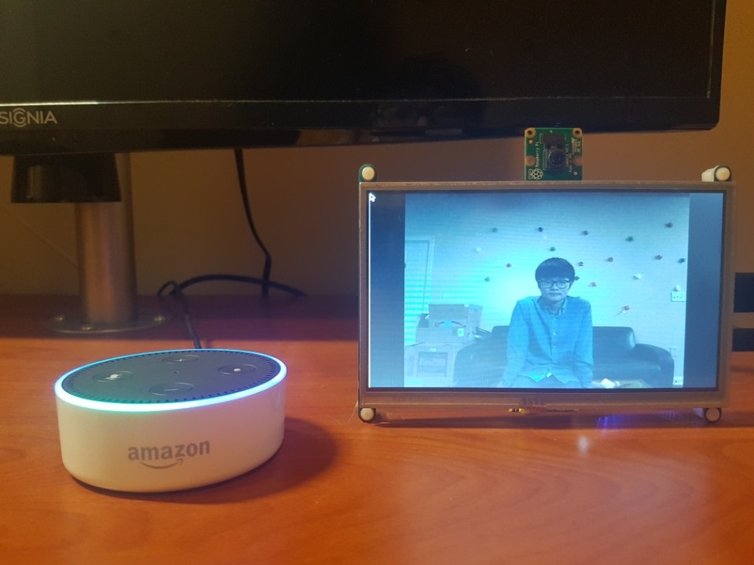

Raspberry Pi 3, Echo Dot, Alexa Skills, AWS Lambda, Node.js, AWS IoT, Node-RED, SDL, Multithreaded Programming, JSON, MQTT, Makefile, C, C++, Python, Linux, JavaScript
Smart picture frame is an IoT picture frame that you can speak to. A user can command the device to take a picture and look through the pictures taken using his or her voice. Unlike a traditional picture frame, a user does not need to take a picture and print it out to display, which takes a long time. With this device, a user can take a picture at any time and display it instantly.
Demonstration of Smart Picture Frame
<Georgia Institute of Technology ECE 4180 Embedded Systems Design>
<Spring 2017>
<Coded by Alan Wootae Song>